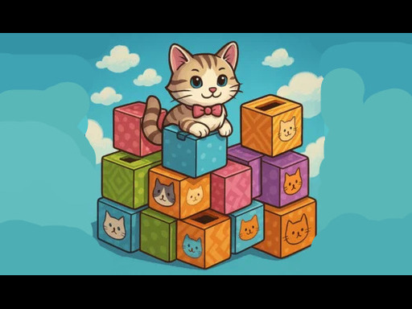
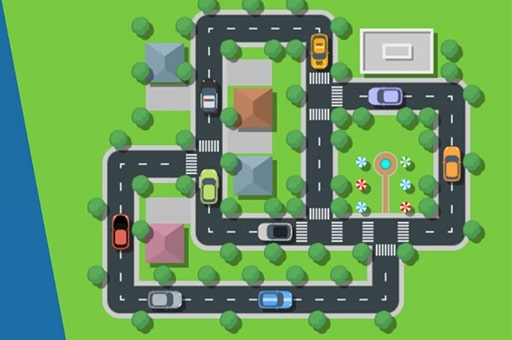
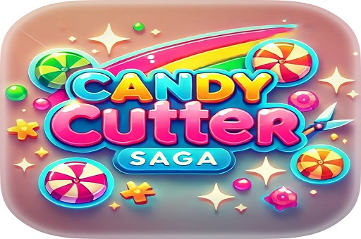

Kitty Litter
Kitty Litter 是一款有趣且令人上瘾的堆叠和运行游戏，您可以在其中帮助一只可爱的小猫建造猫砂塔，以跳过障碍并到达终点线。点击堆叠，计时跳跃，避免撞墙！ 游戏特色： 简单的一键式游戏 堆放垃圾堆以清除障碍物 18 个有趣而多彩的关卡 解锁可爱的小猫角色和猫砂风格 高分追逐者的无尽模式 容易玩，难掌握。堆叠起来，跳过，成为 Kitty Litter 中的猫砂之王！
开始游戏

Traffic Parking
Traffic Parking 是一款具有挑战性的汽车益智游戏，您可以在其中绕过障碍物（如其他汽车和岩石）来引导车辆回家。制定策略以清理路径并解锁棘手关卡的技巧。
开始游戏

Candy Cutter Saga
Candy Cutter Saga 是一款甜蜜而刺激的基于物理的益智游戏，其中精度是关键！剪切 战略性地引导美味糖果通过棘手的障碍，收集所有星星，然后 将其完美地落入饥饿的玩家对象的嘴中。 凭借具有挑战性的关卡、逼真的物理效果和有趣的机制，Candy Cutter Saga 将测试您的时机 和解决问题的能力。你能掌握每一次切割并喂食最甜蜜的美食吗？立即畅玩 这个令人上瘾的充满糖果的冒险！
开始游戏